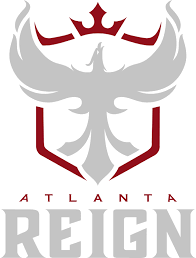

Atlanta Reign
Charles Drake| Events of Season | Overall Happiness |
|---|---|
| Team Annoucement | 100% |
| Winning Mid-Tournament | 200% |
| After losing 2 games | 50% |
| After knocked out of playoffs | -100% |
2023 was the start of the sixth season of the Overwatch league and potentially the last season of Overwatch league as we know it. With myself being a huge enjoyer of not only esports, but specifically Overwatch, this has been both a sad and exciting time for me. This is all due to the final culmination of my favorite team the Atlanta Reign who came into the season with arguably the best roster ever assembled. However, with this star-studded roster that we had, we somehow completely did not show up during playoffs and were knocked out during the first round. After this disappointing display I personally did not watch the rest of playoffs or the championship match being overwhelmingly sick to my stomach having to face my brother whom I have been bragging to the entire season.

After not only having the best record ever recorded of 14 wins and 2 losses (1st seed), and winning the midseason tournament with a perfect record of 8 wins 0 losses, most people would have Atlanta winning the entire season. However, with an ever changing meta and characters who were good becoming bad and vice versa, we were not prepared to continue our dominance. We would find ourselves in the playoffs facing the Hangzhou Spark that we beat 3-0 during the midseason tournament, losing 3-0 ourselves and falling to the lower bracket. We would then face the London Spitfire who were seeded 7th in the playoffs losing 3-0 to them too, who is a team known to never play meta. Overall this was the most disappointing season for Atlanta since we have never actually been a great team, but when we had the opportunity to take the entire league especially during the potentially final season, the lights just were too bright and we fell hard.